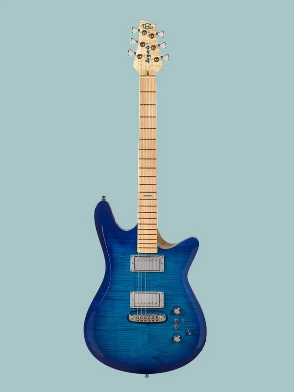
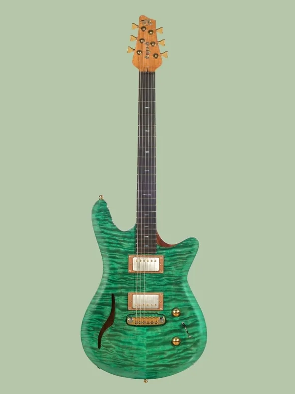
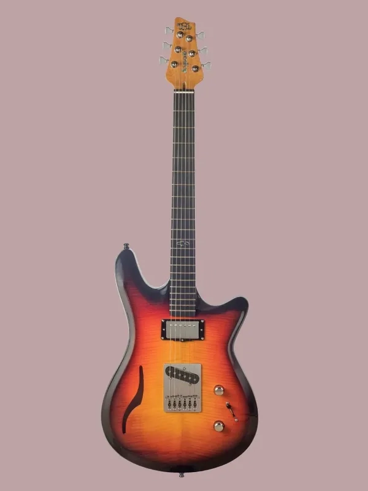

AME Deep Blue
- Solid body.
- Flamed maple top.
- Swamp ash body.
- Flamed maple neck.
- Maple fingerboard.
- Inlays of the same color as the lid.
- ABM 3024c bridge.
- B&B late '50 Paf pickups.
AME Wally Gator Green
- Semi-hollow body.
- Curly maple top.
- African mahogany body.
- African mahogany neck.
- Ebony fingerboard.
- Abalone inlays.
- ABM 3024c bridge.
- B&B late '60 Paf pickups.
AME Tricolor Suburst
- Semi-hollow body.
- Curly maple top.
- African mahogany body.
- African mahogany neck.
- Ebony fingerboard.
- Abalone inlays.
- ABM 3456c bridge.
- B&B Classic '61 and Tele'55 pickups.
Our guitars are made one by one, there are no serial processes. That allows us to focus on every detail and find the best option for each client. If you are interested in our luthier guitars, contact us and we will advise you.